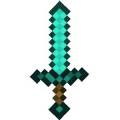

so you find more about tools in this page
so a sword is a useful weapon to kikll mobs[which are monsters} that drops experience points and rotten flesh which can effect you if you eat rotten flesh
IF you have a hunger bar that is decreasing youa re hungry in miecraft so you need to eat food which are
¬Raw beef steak mutton beetroot apple golden apple enchanted golden apple melon rotten flesh {somtimes does not effect you} carrot golden carrot
please go to page 1 for checks